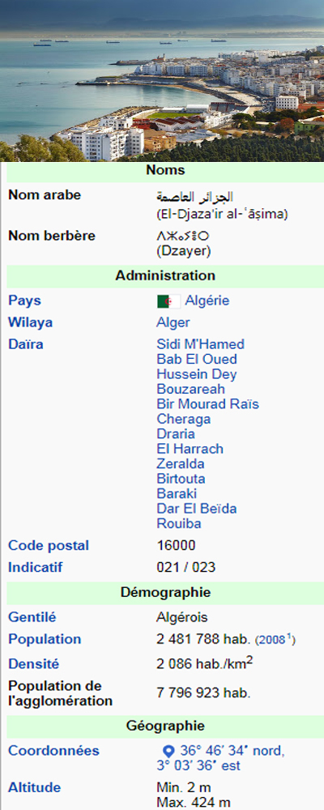

 Alger (en arabe : الجزائر (Al-Jazā'ir), en berbère : ⴷⵣⴰⵢⴻⵔ (Dzayer ou Lezzayer)), surnommée El Bahdja (« la joyeuse »), El Mahrussa (« la bien-gardée ») ou El Beida (« la blanche »), est la capitale de l'Algérie et en est la ville la plus peuplée. Située au bord de la mer Méditerranée, la ville donne son nom à la wilaya dont elle est le chef-lieu. La ville d'Alger est en fait constituée de plusieurs communes et n'a ni personnalité juridique, ni structure d'administration en propre. L'unité urbaine d'Alger comptait 2 481 788 habitants selon l'Office national des statistiques algérien d'après le dernier recensement de 2008. Avec 4,4 millions d'habitants selon le ministère des Affaires étrangères français, tandis que l'agglomération en comptait environ 6 727 806 habitants en 2010 suivant le classement des 100 plus grandes villes du monde par World Gazetteer et 7 796 923 habitants en 2015 selon Population Data, Alger est la première agglomération du Maghreb. Fondée au ive siècle av. J.-C., comme comptoir phénicien en pays berbère, sous le nom d'Ikosim, elle est occupée par les Romains, les Vandales, les Byzantins et les Arabes puis au début du Moyen Âge par la tribu berbère des Beni-Mezghana. C'est le souverain berbère de la dynastie ziride Bologhine ibn Ziri, au milieu du xe siècle qui fondera l'Alger actuelle, sous son nom El-Djazaïr ou Lezzayer, employé encore de nos jours pour la désigner en arabe et en berbère. Elle ne prend son rôle de capitale de l'Algérie qu'à partir de la période de la régence d'Alger en 1515. Elle est alors une des cités les plus importantes de la mer Méditerranée entre le xvie siècle et le début du xixe siècle, pratiquant le corso, et à laquelle les puissances maritimes versent un impôt pour le passage de leur flotte. Son rôle de capitale du pays sera confirmé lors de la colonisation française où elle devient le siège du gouverneur général de l'Algérie. Alger fut la capitale de la France libre de 1942 à 1944. Depuis l'indépendance de l'Algérie, en 1962, devenue capitale de l’État algérien, elle abrite le siège des institutions politiques du pays en plus de tenir un rôle de premier plan économiquement.